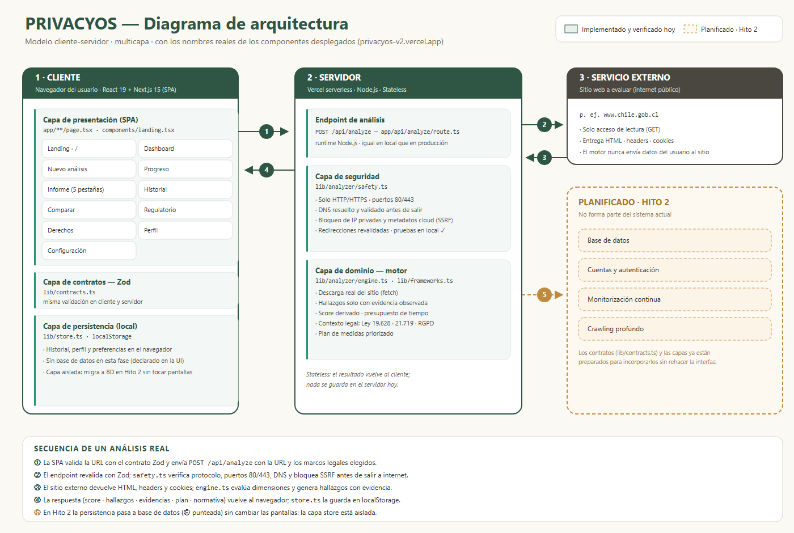

Identidad «Serenidad» · Plataforma de inteligencia para la privacidad digital
Integrantes — Catalina Romero (frontend) · Melisa Ibáñez (documentación) · Simón Salgado (arquitectura)
Stack — Next.js 15 (App Router) · TypeScript · Prisma 6 · PostgreSQL (Supabase) · Zod
Evidencia — 9 rutas REST · 21/21 verificaciones automáticas · despliegue en Vercel
Octubre 2026
El Hito 1 entregó un producto con motor real de evidencia pero persistencia solo en
localStorage. El Hito 2 añade el backend completo manteniendo la identidad visual y
el motor intactos. Cambia infraestructura, no el producto visible.
| Aspecto | Hito 1 | Hito 2 (este informe) |
|---|---|---|
| Persistencia | localStorage del navegador (frágil: se pierde al limpiar el navegador y no viaja entre equipos) | PostgreSQL real en Supabase vía Prisma 6; el navegador conserva localStorage como respaldo cuando la API no responde |
| API | Solo POST /api/analyze (ejecuta el motor sin guardar) | 9 rutas REST para los recursos sites y analyses + /api/assistant (asistente explicativo con feature flag) |
| Códigos HTTP | 200 / 400 / 403 / 504 | 201 · 200 · 204 · 400 · 403 · 404 · 409 · 500 · 502 · 503 · 504, asignados por código de negocio (ver §2) |
| Capas | Motor aislado, validación Zod de entrada | route handler → servicio → repositorio → Prisma, con contratos Zod compartidos y envolvente de error única |
| Frontend | Lee/escribe solo de forma local | Integrado a la API real (historial, comparar, progreso, informe) con degradación con honor a localStorage |
| Asistente | No existe | Widget explicativo opcional: IA solo en servidor, guardas anti-invención, dictado por voz con Web Speech API |
Qué NO cambió (decisión consciente): el motor de evidencia 1.0.0-sereno,
los contratos Zod del análisis, el sistema de diseño Serenidad (marfil/grafito/verde bosque/menta)
y la maqueta de las pantallas. Toda la smoke visual del Hito 1 sigue funcionando idéntica;
la base de datos se sumó debajo.
9 rutas REST 21/21 checks CRUD ✓ diff esquema ↔ BD = vacío typecheck + lint 0 errores Vercel Production + Preview
sites — servicios web registrados para revisión| Método | Ruta | Cuerpo (ejemplo) | Éxito | Errores |
|---|---|---|---|---|
| POST | /api/sites | {"url":"https://www.gob.cl","nombre":"Portal Chile"} | 201 + site | 400 validación · 409 url duplicada (CONFLICTO_URL) · 500 |
| GET | /api/sites | — | 200 + lista | 500 |
| GET | /api/sites/{id} | — | 200 + site | 404 · 500 |
| PATCH | /api/sites/{id} | {"notas":"revisar cookies de terceros"} | 200 + site | 400 · 404 · 500 |
| DELETE | /api/sites/{id} | — | 204 sin cuerpo | 404 · 409 si tiene análisis (FK RESTRICT) · 500 |
analyses — análisis de privacidad (motor + persistencia)| Método | Ruta | Cuerpo / query | Éxito | Errores |
|---|---|---|---|---|
| POST | /api/analyses | {"url":"…","siteId":"(opcional)","frameworkIds":["GDPR"]} | 201 + análisis completo (corre el motor real y persiste) | 400 · 403 guardas SSRF (BLOQUEADO) · 500 · 504 |
| GET | /api/analyses | query limit, siteId | 200 + lista (orden createdAt desc) | 500 |
| GET | /api/analyses/{id} | id PS-XXXXXX | 200 + análisis | 404 · 500 |
| PATCH | /api/analyses/{id} | {"notas":"…","revisado":true} | 200 + análisis | 400 · 404 · 500 |
| DELETE | /api/analyses/{id} | — | 204 sin cuerpo | 404 · 500 |
| Ruta | Descripción |
|---|---|
POST /api/analyze | Endpoint heredado del Hito 1: ejecuta el motor sin persistir. Se conservó para poder probar el motor aislado. |
POST /api/assistant | Asistente explicativo. Sin secretos en el cliente; deshabilitado sin ASSISTANT_ENABLED=1 (503); cuando la IA falla responde 502/503 con mensaje amable y no rompe la app. |
{
"ok": false,
"code": "CONFLICTO_URL",
"message": "Ya existe un sitio con esa URL.",
"hint": "Usa PATCH /api/sites/{id} si quieres actualizarlo."
}Nunca se devuelven stack traces ni detalles internos. Criterio de
versionado: exista un consumidor externo (API pública, móvil) o un cambio
incompatible, se introduce /api/v1/…; hoy el consumidor es la propia SPA.
Contrato completo y colección Postman de 15 peticiones encadenadas en
docs/api.md y docs/privacyos-hito2.postman_collection.json.
| Capa | Módulos | Responsabilidad |
|---|---|---|
| Route handlers transporte HTTP | app/api/*/route.ts | Parsing, validación de cuerpo con Zod, elección del código HTTP. Sin lógica de negocio. |
| HTTP utilities | lib/http.ts | ApiError + envolvente única {"ok","code","message","hint"}; mapea excepciones a respuestas. |
| Servicios reglas de negocio | lib/services/*.service.ts | Generación de id PS-XXXXXX con reintento ante colisión, ejecución del motor, política de borrado, guardas del asistente (feature flag, cuota, retries). |
| Repositorios acceso a datos | lib/repositories/*.repository.ts | El único módulo que habla con Prisma. Cambiar la BD = cambiar solo aquí. |
| Base de datos | PostgreSQL (Supabase) vía lib/db.ts (singleton de Prisma) | Persistencia real; pool con connection_limit por plan. |
| Cliente web SPA | lib/api-client.ts | Adaptador del frontend a la API; degrada a localStorage si la API no responde y avisa en la UI. |
POST /api/analyses (petición → base de datos)app/api/analyses/route.ts recibe el JSON y
valida el cuerpo (URL, formato, siteId opcional, frameworkIds) con contratos Zod de
lib/contracts.ts. Si falla → 400 VALIDACION, sin llegar a la BD.analyses.service.ts genera el id PS-XXXXXX
(alfabeto sin caracteres ambiguos), ejecuta el motor real sobre la URL (con las guardas
anti-SSRF del Hito 1) y arma el payload completo (hallazgos, evidencias, plan de acción).analyses.repository.ts llama a Prisma (create) —
si el siteId no existe, la FK lo impide: el servicio traduce P2003 →
400 VALIDACION; si el id colisiona, reintenta con otro id
(P2002 → nuevo intento, hasta 5 veces).analyses
(score, riskLevel nullable, payload JSON, relación con sites).201 con el análisis completo en el mismo formato que consume
el informe del frontend (idéntico al formato localStorage: el informe y el historial no
distinguen el origen).Cualquier error lanzado por las capas internas es capturado en el handler y convertido en
ApiError: salida siempre JSON uniforme, códigos HTTP correctos, nada de fugas internas.

model Site {
id String @id @default(cuid())
url String @unique
nombre String?
notas String?
createdAt DateTime @default(now())
updatedAt DateTime @updatedAt
analyses Analysis[]
@@map("sites")
}
model Analysis {
id String @id // formato PS-XXXXXX, asignado por el servicio
url String
score Int // 0..100
riskLevel String? // "bajo"|"medio"|"alto"|"critico" — puede ser null (honesto)
payload Json // análisis completo validado por Zod
notas String?
revisado Boolean @default(false)
siteId String?
site Site? @relation(fields: [siteId], references: [id], onDelete: Restrict)
createdAt DateTime @default(now())
updatedAt DateTime @updatedAt
@@index([createdAt(sort: Desc)]) @@index([siteId]) @@map("analyses")
}sites = cuid: aleatorio y seguro de adivinar; generado por Prisma.analyses = PS-XXXXXX: conserva el formato que el motor
ya usaba en el Hito 1 para que historial e informe funcionen igual con datos locales o de la BD.
El id lo asigna el servicio (no la base) y reintenta ante colisión.siteId → sites.id con onDelete: Restrict: es imposible
borrar un sitio con análisis asociados — la API responde 409 con
code: "CONFLICTO_FK" y una pista para revisar el análisis antes de borrar. Protege la integridad del historial.riskLevel nullable: si el insuficiente nivel de evidencia no permite
clasificar riesgo, se guarda null en vez de inventar categorías.payload JSON íntegro: conservamos el informe completo (hallazgos,
evidencias, plan de acción) tal como lo consume el front, evitado cualquier transformación con
pérdida de información.createdAt desc (el historial pagina lo más reciente) y
siteId (filtro por sitio).| Aspecto | Detalle |
|---|---|
| Proveedor | Supabase (PostgreSQL 15 gestionado, plan gratuito). Pool de conexiones con el endpoint *.pooler.supabase.com. |
| Creación del esquema | Doble vía para reproducibilidad: script SQL db/init.sql + migración baseline prisma/migrations/20261026000000_init. |
| Verificación de coincidencia | prisma migrate diff --from-url … --to-schema-datamodel … ⇒ diff vacío: la base coincide exactamente con el modelo. |
| Diagrama ER | db/erd.mmd (Mermaid) y guía en db/README.md. |
| Credenciales | Todas en variables de entorno DATABASE_URL (Vercel type Secret/Hidden); plantilla sin secretos en .env.example; .gitignore excluye .env.local. Se rota la contraseña una vez expuesta accidentalmente durante el desarrollo (lección documentada). |
scripts/test-crud.mjsPrueba de caja negra contra el servidor real (21 verificaciones, crea y borra sus propios datos — no ensucia la base):
| Grupo | Qué verifica |
|---|---|
| SITE (10) | 201 al crear · id devuelto · lista 200 · el creado aparece · PATCH 200 · notas persistidas · duplicado 409 · inválido 400 · PATCH inexistente 404 · GET tras relanzar sigue con datos (persistencia CRUDA) |
| ANALYSIS (11) | 201 con motor real · formato de id PS-XXXXXX · score 0..100 en BD · lista por ?siteId · detalle 200 · payload con hallazgos/evidencias · PATCH notas+revisado · 404 inexistente · DELETE 204 · tras DELETE la lectura da 404 · DELETE del sitio limpieza |
Resultado en el build de producción con la base real: 21 ✓ · 0 ✗.
prisma.io/docs.maxDuration: nextjs.org/docs.postgresql.org/docs.supabase.com/docs.zod.dev.httpwg.org/rfc-editor.org/rfc/rfc9110.owasp.org.eur-lex.europa.eu.developer.mozilla.org/docs/Web/API/Web_Speech_API.| Criterio | Peso | ¿Cómo se evaluó? |
|---|---|---|
| Costo real | alto | tengo algo de presupuesto cero; cada servicio elegido tiene capa gratuita estable |
| Alinear con lo ya hecho | alto | el Hito 1 ya es Next.js + TypeScript; la BD debía integrarse sin reescribir |
| Simplicidad de operación | alto | 3 estudiantes; cero DevOps dedicado o mínimo |
| Corrección de la API | medio | soporte de códigos HTTP correctos, validación en runtime y errores tipados |
| Portabilidad | medio | que se pueda montar en otro equipo con npm install + .env |
| Decisión | Alternativas descartadas | Justificación | Costo estimado |
|---|---|---|---|
| Next.js 15 + Route Handlers para el backend | Servidor aparte (Express/Fastify), datos "sin servidor" en el cliente | Un solo artefacto para SPA + API (menos superficie de despliegue). Express nos obligaría a CORS y despliegue separado; localStorage ya falló en Hito 1. | $0 (Vercel Hobby) |
| PostgreSQL vía Supabase | MongoDB Atlas / SQLite / MySQL (PlanetScale) | PostgreSQL es relacional (sites ↔ analyses son entidades fijas y FK real de integridad). Supabase ofrece plan free estable y pooler; SQLite no cumple "persistencia real en servidor"; PlanetScale eliminó su plan free. | $0 (plan free, 500 MB, pausa tras inactividad) |
| Prisma 6 | Drizzle, TypeORM, SQL crudo | Migraciones auditables, tipos generados, diff verificable contra la BD, errores de dominio (P2002/P2003) que mapeamos a códigos HTTP. | $0 (Apache-2.0) |
| Zod compartido front ↔ API | Solo tipos TypeScript / class-validator | Validación en runtime en el borde del sistema, con un solo contrato para ambas partes (evita drift entre lo que envía UI y lo que acepta la API). | $0 |
| IA del asistente: API cloud con feature flag | Modelo self-hosted en el despliegue | Ver §8. Un modelo propio en producción exige GPU/infra que escapa del alcance del hito; la API costs $0 en tier gratuito con llave solo en servidor. | $0 (tier free) — costo marginal por token si escala |
Infra: $0/mes (Vercel Hobby + Supabase free + Postman free) Licencias: <$0 (todas open source) Riesgo de despeje: plan free pausar Supabase por inactividad → operación documentada en README (despertar el proyecto) y degradación con honor en el front
maxDuration (configurado a 60 s para el asistente, 30 s motor).PRIVACYOS es un monolito modular: un único despliegue (aplicación Next.js) con fronteras rígidas entre capas internas. Elegimos el punto medio entre "un solo archivo gigante" y "microservicios":
| Opción | Pros | Contras para un equipo de 3 |
|---|---|---|
| Monolito anárquico | rápido de empezar | código acoplado; imposible probar por capas; nos frenaría después |
| Monolito modular (elegido) | despliegue simple + capas con fronteras + testeable caja negra | requiere disciplina en imports (documentada en README) |
| Microservicios | escalado por servicio | 3 repos/despliegues, CORS, versionado multi; sobrevisión total hoy |
En una corrección de diseño pedimos: «Implementa este endpoint nuevo: GET
/api/sites/{id}/informe que devuelva el último análisis del sitio». Un revisor puede
verificar, en menos de 15 minutos:
analyses.service.ts y analyses.repository.ts, no en el route handler.
La firma de las capas lo dice sola.docs/api.md antes de
codear (como hicimos con todo el CRUD).test-crud.mjs lo cubren.scripts/test-crud.mjs
en el mismo commit.Las fronteras hacen que la revisión sean preguntas pequeñas y verificables, no debates de estilo.
| Opción | Descripción | Ventajas | Desventajas | ¿Elegida? |
|---|---|---|---|---|
| A · Sin asistente | Solo glosario estático | Cero riesgo, cero costo | No responde preguntas del usuario; no usa la IA disponible | — |
| B · Plantillas de texto pre-escritas | Explicaciones fijas por hallazgo | Predecible 100% | Rígida: no atiende la pregunta concreta; puede contradecir el informe si este cambia | — |
| C · API cloud con asistente limitado al JSON del informe (elegida) | /api/assistant recibe la pregunta + el JSON del informe y una reglamenta ancla; responde ≤ 60 palabras en lenguaje claro, marcada como explicación | Respuesta contextual y breve; el modelo solo cita lo que ya está en el informe; llave solo en servidor; apagable con flag | Depende de proveedor externo (mitigado con fallback y mensajes amables); posible saturación del tier free | ✔ |
| D · Modelo auto-hospedado (self-hosted) con fine-tuning | Desplegar un LLM propio (p.ej. LoRA cuantizado en GPU) | Independencia total; es la vía si la universidad pidiera "entrenar pesos" a futuro | Costo/infra GPU fuera del alcance del hito; mantenimiento experto | Futuro (hoja de ruta) |
| Criterio | A | B | C (elegida) | D |
|---|---|---|---|---|
| Utilidad real para el usuario | Baja | Media | Alta | Alta |
| Riesgo de invención (alucinación) | Nulo | Nulo | Bajo (restricciones al JSON + brevedad + disclaimer) | Medio |
| Costo/infra | Nulo | Nulo | Cero (tier free) | Alto |
| Factibilidad esta semana | ✓ | ✓ | ✓ (hecha y verificada) | ✗ fuera de alcance |
ASSISTANT_ENABLED=1, la ruta no existe para el mundo (503 documentado).GEMINI_API_KEY nunca viaja al navegador) y
códigos 502/503 con mensaje amable y contacto si la IA no está disponible — la app
sigue funcionando sin el asistente.El widget acepta dictado con la Web Speech API nativa del navegador (es-CL): sin proveedores externos, sin costos y sin datos de voz que salgan del dispositivo. El texto dictado va a la caja como si fuese tipeado, con botón de envío propio; si el navegador no soporta la API, el control simplemente no aparece (degradación limpia).
| Requisito | Medio de verificación | Estado |
|---|---|---|
| 2 recursos CRUD completos (sites, analyses) | scripts/test-crud.mjs → 21 ✓ · 0 ✗ contra la BD real | ✔ |
| Persistencia real (no memoria ni solo localStorage) | PostgreSQL/Supabase; GET tras relanzar mantiene datos; diff esquema↔BD vacío | ✔ |
| Códigos HTTP correctos y errores uniformes | envolvente {"ok","code","message","hint"}; checks de 201/200/204/400/404/409 | ✔ |
Secretos fuera del repo + .env.example | .gitignore excluye .env.local; Vercel las trata como Secret/Hidden; plantilla sin secretos | ✔ |
| Levantar en otro equipo | README: npm install + .env + prisma generate + migración o db/init.sql | ✔ |
| Colección API importable | docs/privacyos-hito2.postman_collection.json (15 peticiones encadenadas) | ✔ |
| Sitios/Analyses legibles desde el SPA | historial · comparar · progreso · informe integrados con degradación con honor | ✔ |
Informe generado por el equipo PRIVACYOS · Catalina Romero, Melisa Ibáñez y Simón Salgado · Octubre 2026.